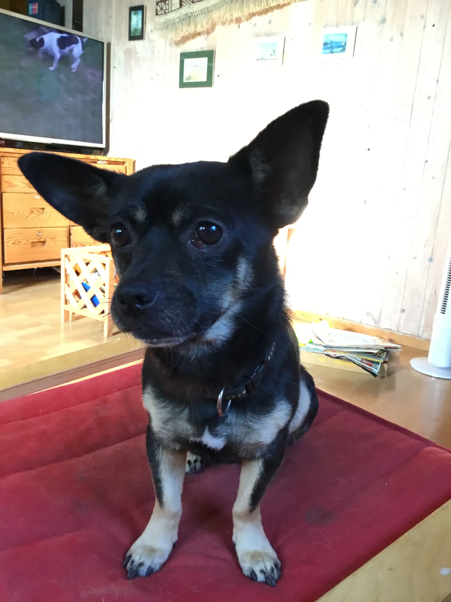

Quick Reference: Benny & Balou
Discover a wide array of moments from the lives of Benny and Balou, each with its own unique charm and story.
Whether you’re looking for playful romps, peaceful naps, or muddy adventures, our collection has something for every dog lover.
Explore the diverse personalities, moods, and settings captured in these photos to bring a smile to your day.
Here come the pics!
Benny and Balou’s adventures take them to all sorts of places.
From sun-dappled forests and open meadows to cozy corners at home, you’ll find them exploring, playing, and relaxing in a variety of environments.
If you’re after a specific theme— “Forest Frolics” or “Lazy Afternoons” — use the selections below to find your favorites.
Have a look
A picture!
A picture!
A picture!
A picture!
A picture!

A picture!
A picture!
A picture!
A picture!
A picture!
A picture!
A picture!
Frequently Asked Questions
What do I need to start photographing dogs like Benny and Balou?
All you need is a camera or smartphone, a pocketful of treats, and a sense of adventure! Patience helps, too—sometimes the best moments happen when you least expect them. Don’t forget to bring water and a favorite toy to keep your furry models happy.
How can I capture their personalities in photos?
Get down to their level, use natural light, and let them be themselves. Candid shots often reveal the most character. Try to photograph them in their favorite spots or during activities they love—whether it’s chasing a ball, sniffing around, or just lounging in the grass.
Where can I find great photo spots?
Look for places where your dogs feel comfortable and safe. Parks, forests, and backyards are all great options. Pay attention to the background and lighting—early morning or late afternoon often gives the best results. And remember, sometimes the best photo ops happen right at home!
What are the best times for dog photography?
Golden hour (just after sunrise or before sunset) offers beautiful, soft light. But any time your dogs are happy and relaxed is a good time for photos! Each season brings its own unique backdrop, from spring flowers to autumn leaves and winter snow.